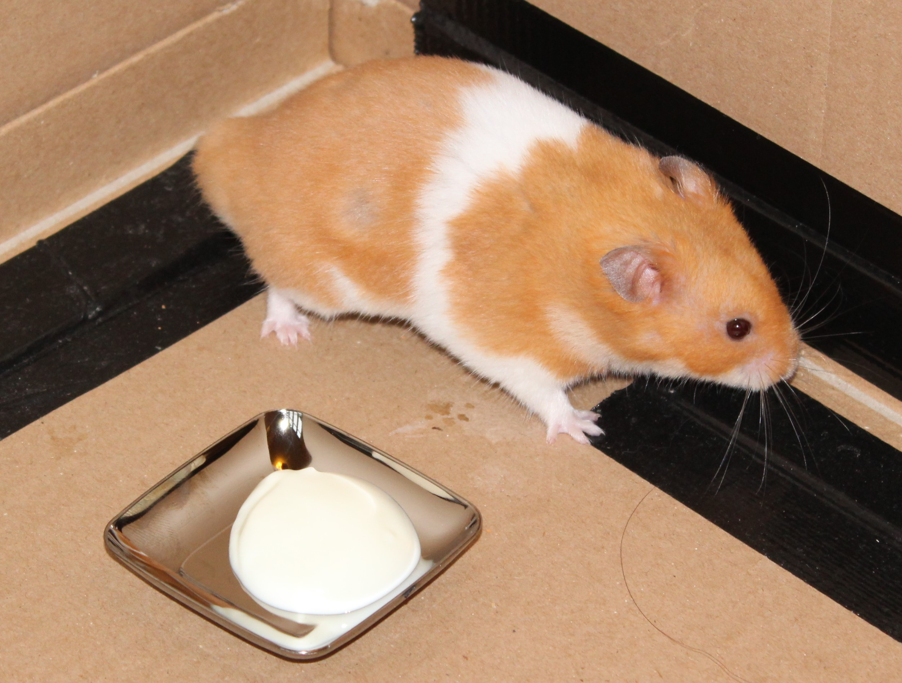

I love my Pets@Home Totally Tropical Bed.
24-Jul-2017 | Milku
But I couldn't eat a whole one.
Yesterday evening I was given my new Pets@Home Totally Tropical Bed. My humans put it in the old cardboard box I run around while they clean my cage and waited for me to notice it. That didn't take too long. I was most intrigued.
A quick sniff around the edge was all it took to persuade me that it was worth investigating further. I scrambled over the side and sank into the lovely padded cushion. There is a lower entrance at the front of the bed, but I prefer climbing in over the sides.
But why stop at just resting in comfort...I wanted to know what was underneath the cushion. Had someone left any snacks down there? I used my claws and my teeth and burrowed down. Great fun! I don't think my humans were too impressed that I'd made holes in the cushion within 5 minutes. I hadn't let the stuffing out so I don't know what the problem is!

My humans had thought that they could put this new bed in the den area of my Alexander Cage. But it's too bulky for that. It'd be a bit tricky for me to get in and out of it without bumping my head on the den roof. So I still snuggle down to sleep in a lovely kapok nest. Instead the new bed has been positioned under one of the wooden platforms in my cage, where it is hidden from view by a ramp. It'll be great for a pit-stop while I'm roaming around during the night.
The bed is a lovely turquoise colour. But there is a bit of a choice with the cushion. One side is purple. But I prefer the turquoise side with its colourful zig-zag lines. As it's on display (sort of) it'll add a bit of necessary colour to my cage too.
I knew my humans would try giving me yogurt to taste. Just because some other hamsters like it doesn't mean that we all do. It didn't look good and I ignored the dish. They even tried to dab a bit on my mouth to make me taste it. No success for them there...I'm far too clever for that...just keep moving if you're ever in the same situation.
And just to remind you that, today is the start of National Parks Week. My humans have a couple of trips to different National Parks lined up for the holidays...but during other weeks. They need to learn to plan their jaunts a bit better.